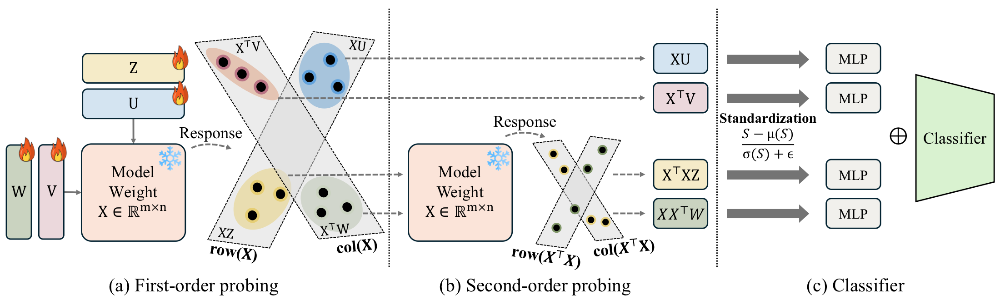
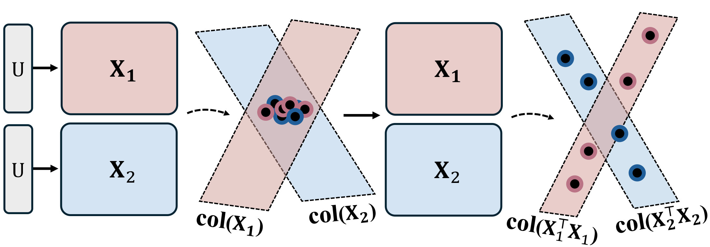
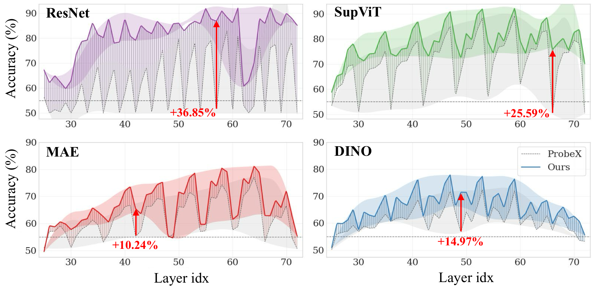
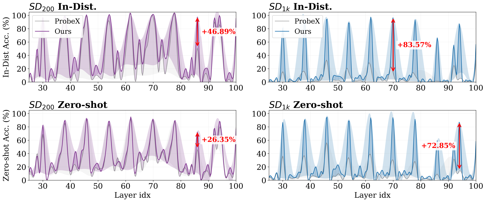

What a single linear probe misses, multi-view probing finds.
We prove that distinct weight matrices can collapse to the same first-order probe response, making them indistinguishable.
Four complementary branches \(\mathbf{XU},\mathbf{X}^{\!\top}\!\mathbf{V},\mathbf{XX}^{\!\top}\!\mathbf{W},\mathbf{X}^{\!\top}\!\mathbf{XZ}\) combine first-order projections with Gram-based interaction views, fused by a theory-grounded per-sample standardization.
Consistent gains over ProbeX on ResNet, SupViT, MAE, and DINO — and stable performance even on layers where existing probes collapse to near-random.
The explosive growth of open-source model repositories has created a Model Jungle, where checkpoints are frequently shared without adequate documentation or metadata. While weight-space learning offers a pathway to identify and analyze these models directly from their parameters, processing full-scale weights is computationally prohibitive. Probing-based methods have emerged as a lightweight alternative, extracting permutation-equivariant representations via learnable probe vectors. However, existing probing methods are limited by a single-view design: they capture first-order structures but fail to encode the rich, higher-order correlation patterns inherent in row–column interactions. To bridge this gap, we introduce MVProbe, a multi-perspective probing framework that synthesizes first-order signals with interaction-aware (Gram-based) views. Our approach is theoretically grounded; we analyze the scaling laws of different probing orders to derive a principled standardization and fusion strategy that ensures balanced contributions from all branches. On the Model Jungle benchmark, MVProbe consistently outperforms the state-of-the-art ProbeX across diverse architectures, including ResNet, SupViT, MAE, and DINO.

Overview of MVProbe. Given a weight matrix \(\mathbf{X}\in\mathbb{R}^{m\times n}\), MVProbe extracts probe responses from four complementary views. (a) First-order probing: learnable probes \(\mathbf{U}\) and \(\mathbf{V}\) produce row- and column-space responses \(\mathbf{XU}\) and \(\mathbf{X}^{\top}\mathbf{V}\). We also compute \(\mathbf{XZ}\) and \(\mathbf{X}^{\top}\mathbf{W}\) as intermediate projections for the second-order branches. (b) Second-order probing: applying \(\mathbf{X}^{\top}\) and \(\mathbf{X}\) once more yields Gram-based responses \(\mathbf{X}^{\top}\mathbf{X}\mathbf{Z}\) and \(\mathbf{X}\mathbf{X}^{\top}\mathbf{W}\), capturing column- and row-wise correlation structure. (c) All responses are standardized, processed by branch MLPs, concatenated (\(\oplus\)), and fed into a shared encoder followed by a classifier head.
Existing single-direction probes summarize a weight matrix \(\mathbf{X}\in\mathbb{R}^{m\times n}\) by a single first-order projection \(\mathbf{X}\mathbf{u}\). Such projections are inherently ambiguous: distinct weight matrices can produce identical probe responses, collapsing them to the same representation. They also miss higher-order structure such as the row–column correlations encoded in the Gram matrices \(\mathbf{X}\mathbf{X}^{\top}\) and \(\mathbf{X}^{\top}\mathbf{X}\).
MVProbe addresses this with four complementary branches. First-order branches use learnable probe matrices \(\mathbf{U},\mathbf{V}\) and produce \(\mathbf{XU}\) and \(\mathbf{X}^{\top}\mathbf{V}\) — direct row/column projections. Second-order (kernel) branches use probe matrices \(\mathbf{W},\mathbf{Z}\) and apply the Gram operators to produce \(\mathbf{XX}^{\top}\mathbf{W}\) and \(\mathbf{X}^{\top}\mathbf{XZ}\), which encode pairwise similarity structure between output and input neurons, respectively. Each branch is followed by per-sample standardization, a branch-specific MLP, and feature concatenation; a shared encoder and classifier head complete the model.
We motivate this design from two perspectives. From kernel methods, Gram matrices encode pairwise similarity that first-order projections cannot capture. From landmark-based representations in manifold learning, the four probe matrices act as learned reference directions and kernel-space landmarks that together coordinate the geometry of the weight matrix.

Conceptual illustration of Theorem 1. With the same probe matrix \(\mathbf{U}\), two distinct weight matrices \(\mathbf{X}_1\) and \(\mathbf{X}_2\) may produce first-order probe responses that are indistinguishable under standard probing. Theorem 1 shows that second-order, Gram-based representations can separate such cases.
Theorem 1 — Expressiveness of Second-Order Probes
Let \(\mathbf{U}\in\mathbb{R}^{n\times r}\) be a probe matrix with \(\mathrm{rank}(\mathbf{U})=r<n\), and define the first- and second-order features \(\Phi_1(\mathbf{X}) := \mathbf{X}\mathbf{U}\) and \(\Phi_2(\mathbf{X}) := (\mathbf{X}^{\top}\mathbf{X})\mathbf{U}\). Then there exist distinct \(\mathbf{X}_1\neq\mathbf{X}_2\) with \(\Phi_1(\mathbf{X}_1)=\Phi_1(\mathbf{X}_2)\) but \(\Phi_2(\mathbf{X}_1)\neq\Phi_2(\mathbf{X}_2)\). Consequently, when \(r<n\), adding second-order branches separates weight matrices that are indistinguishable to first-order probing alone.
Theorem 3 — Scale Imbalance & Standardization
For \(\mathbf{X}\) with i.i.d. \(\mathcal{N}(0,\sigma^2)\) entries and unit-norm probe columns, the expected scale ratio between the second- and first-order responses is \(\mathbb{E}\!\left[\|\mathbf{S}^{(2)}\|_F^2\right]/ \mathbb{E}\!\left[\|\mathbf{S}^{(1)}\|_F^2\right] = \tfrac{n(n+m+1)}{m}\sigma^2 = \mathcal{O}(n\sigma^2)\), so naive concatenation is dominated by the second-order branch. Per-sample standardization yields \(\|\tilde{\mathbf{S}}\|_F^2 = mr\) regardless of order, equalizing branch contributions and motivating the standardization block in MVProbe.
MVProbe's improvement over the previous state of the art (ProbeX), absolute Δ on accuracy.
Accuracy (%), mean±std over seeds 1–5 on the Model Jungle benchmark.
| Method | ResNet | SupViT | MAE | DINO |
|---|---|---|---|---|
| StatNN | 55.20 | 55.80 | 54.83 | 55.69 |
| ProbeGen | 78.27 | 78.48 | 70.68 | 61.26 |
| ProbeX | 81.61±1.29 | 88.08±0.39 | 77.11±0.14 | 72.54±0.18 |
| ProbeX (×4) | 87.16±0.26 | 90.33±0.31 | 77.26±0.12 | 73.25±0.21 |
| MVProbe (Ours) | 92.24±0.25 | 92.33±0.37 | 81.62±0.15 | 78.29±0.31 |

Layer-wise performance comparison. MVProbe (solid lines) vs. ProbeX (dashed lines) across all layers. Shaded bands indicate the performance volatility. MVProbe maintains higher accuracy across most layers and shows less sensitivity to layer selection.
In-distribution and zero-shot accuracy on SD_200 and SD_1k LoRA adapters (mean±std over seeds 1–5, layer 46).

Layer-wise performance on SD LoRA. MVProbe (solid lines) vs. ProbeX (dashed lines) across all layers on \(\text{SD}_{200}\) and \(\text{SD}_{1k}\) (In-Distribution and Zero-shot). Shaded bands indicate per-layer volatility; red arrows mark the largest gains.
| Method | In-Distribution Acc | Zero-shot Acc |
|---|---|---|
| ProbeX | 98.48±0.48 | 94.01±0.77 |
| ProbeX (×4) | 97.72±0.50 | 93.53±1.99 |
| MVProbe (Ours) | 99.80±0.00 | 95.53±0.65 |
| Method | In-Distribution Acc | Zero-shot Acc |
|---|---|---|
| ProbeX | 35.75±2.44 | 52.42±2.48 |
| ProbeX (×4) | 32.46±3.08 | 51.14±3.88 |
| MVProbe (Ours) | 97.88±0.37 | 97.96±0.29 |
@inproceedings{heo2026mvprobe,
title = {What Linear Probes Miss: Multi-View Probing for Weight-Space Learning},
author = {Heo, Eunwoo and Seo, Kyeongkook and Yoo, Jaejun},
booktitle = {Proceedings of the 43rd International Conference on Machine Learning},
year = {2026},
series = {Proceedings of Machine Learning Research},
publisher = {PMLR}
}
We thank the authors of ProbeX (Horwitz et al., CVPR 2025) for releasing their codebase, on which this work builds. We also thank the maintainers of the Model Jungle benchmark and the Stable Diffusion LoRA datasets for making weight-space research broadly accessible.